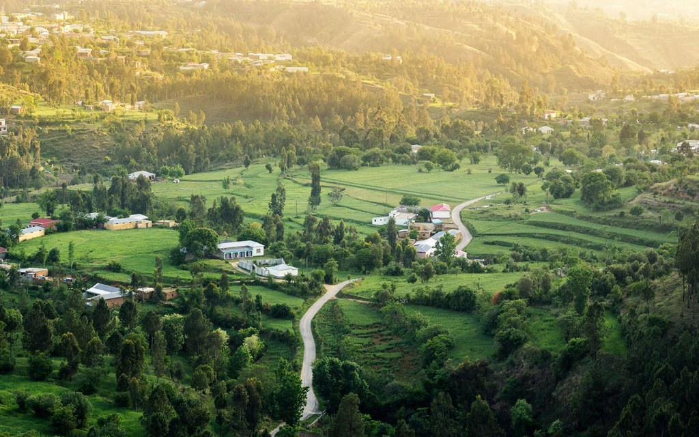
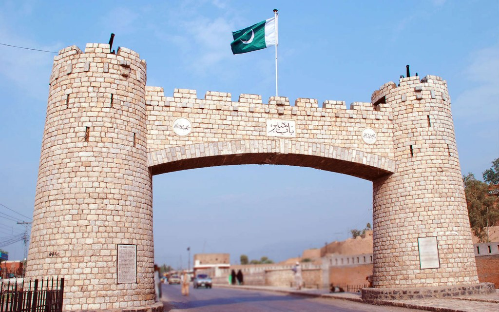

Khyber Pakhtunkhwa, formerly North-West Frontier Province, northernmost
province of Pakistan.
It is bounded by Afghanistan to the west and north, Azad Kashmir and
Gilgit-Baltistan (the Pakistani-administered areas of the Kashmir
region)
to the east and northeast, Punjab province to the southeast, and
Balochistan province to the southwest.
On the western boundary of Khyber Pakhtunkhwa, along the Afghan border,
are the areas formerly known as the Federally Administered Tribal Areas
(FATA),
a series of areas that are ethnically homogeneous with the province but
were semiautonomous until 2018.
Peshawar is the provincial capital. Area province, 39,282 square miles
(101,741 square km). Pop. (2017) province, 35,519,927.
EXPLORING THE FAMOUS TOURIST ATTRACTIONS IN KPK:
CHITRAL
SWAT VALLEY
ABBOTTABAD
THE KHYBER PASS
CHITRAL:
Situated towards the west of River Kunhar, this veritable piece of heaven
on earth is nestled at the base of the Hindu Kush mountain ranges. Chitral
is known for its captivating landscapes, fruit-laden trees, snow-peaked
mountains and lush green meadows.If you really want to make the most of
your time at Chitral, then visit the valley during the summer months when
you will see fruit-laden trees of cherries, apricots and pomegranate.
SWAT VALLEY:
Swat is a picturesque valley with gushing waters of Swat River cutting
through it. You will find plenty of resorts just next to Swat River that
offer breathtaking views both at sunrise and sunset. You can visit Swat
anytime of the year but most travelers plan a trip during the summer
season to enjoy the refreshing waterfalls and cold river streams. Also
dubbed as the East Switzerland, it is a delight for international tourists
thanks to the free flowing rivers, natural waterfalls, gushing river
streams, tall pine trees set against the snow-capped mountains.
ABBOTTABAD:

Abbottabad serves as a transit city for tourists visiting the northern
areas such as Nathiagali and Naran etc. Apart from being a stopover,
Abbottabad is a beautiful tourist destination with many tourist spots such
as Harnoi, which is located about 11 kilometers away from the main city
center. It is surrounded by tall green mountains and cold water streams
that flow through the city. People who stop even for a day or two in
Abbottabad, visit Thandiani, which is 31 km from Abbottabad and 2,700
metres above sea level.
THE KHYBER PASS:

A mountain pass on the border of Afghanistan, Khyber Pass has seen many
important invasions in the past from famous invaders like Genghis Khan,
Mahmud Ghaznavi and later by Moguls